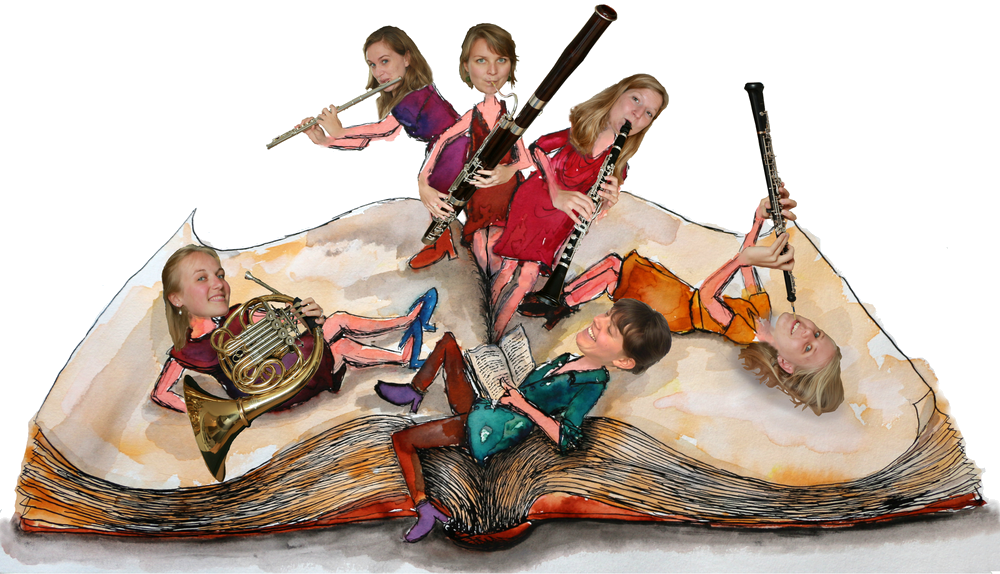

Castor & Pollux, de Sterrentweeling
i.s.m. Epos EnsembleHet Epos Ensemble is een Amsterdams blazerskwintet, bestaande uit vijf musici, bespelers van de fagot, hoorn, hobo, dwarsfluit en klarinet. Ze maken vertelvoorstellingen voor jonge kinderen, basisschool leeftijd. Eerder brachten ze met een verteller voor Amsterdamse scholen en scholen buiten Amsterdam: ‘Peter en de Wolf’ van Sergej Prokofjev en ‘Joris en de geheimzinnige toverdrank’ van Roald Dahl met muziek van verschillende Romantische en hedendaagse componisten.
Voor de nieuwe voorstelling van het Epos Ensemble mocht ik de theatertekst schrijven. Deze voorstelling is geïnspireerd door de muziek voor blazerskwintet van hedendaagse Zweedse componist Lennart Fredriksson: ‘Castor en Pollux (Dioskurerna)’. De Dioskouren, Castor en Pollux, zijn de Griekse heldentweeling aanwie het sterrenbeeld Tweeling zijn naam dankt.
Ik heb een verhaal geschreven over de opgroeiende tweeling uit Sparta, twee broers die dezelfde wens hebben om een held te worden, maar toch anders zijn. De één is menselijk en de ander is goddelijk, maar we weten niet wie van de twee. Ze beleven een leven vol avontuur: de Jacht op het Kalydonische Zwijn, de tocht van de Argonauten en het bevrijden van hun zus Helena. En in gevecht met de heldentweeling van Messenië slaat uiteindelijk hun noodlot toe, een van hen sterft en de ander wordt goddelijk. Op dit cruciale moment weet Zeus, hun vader, de God van de bliksem, een twist te geven aan hun lot waardoor ze tot sterren worden. Aan hun wordt het sterrenbeeld Tweeling gewijd, zoals we dat nog steeds kennen. Kijkend naar de sterren zullen mensen hun verhaal niet vergeten en aan elkaar over de bijzondere broers blijven vertellen. Samen met het Epos Ensemble breng ik de voorstelling: ‘Castor en Pollux, De Sterrentweeling’, een vertelconcert met de muziek van Lennart Frederiksson.
